Computing a Full Analysis with fasstr
Source:vignettes/fasstr_full_analysis.Rmd
fasstr_full_analysis.RmdThe Flow Analysis Summary Statistics Tool for R (‘fasstr’) is a set of R functions to tidy, summarize, analyze, trend, and visualize streamflow data. This package summarizes continuous daily mean streamflow data into various daily, monthly, annual, and long-term statistics, completes annual trends and frequency analyses, in both table and plot formats.
This vignette documents the usage of the compute_full_analysis() and write_full_analysis() functions in ‘fasstr’. This vignette is a high-level adjunct to the details found in the function documentation (see ?compute_full_analysis and ?write_full_analysis). You’ll learn what arguments to provide to the function to customize your analyses, what analyses are computed, and what outputs are produced.
Use
The full analysis functions produce a suite of tables and plots from the various ‘fasstr’ functions. There are seven groups of analyses (see below) which are stored in lists in the created object for the compute_ function and written into an Excel workbook (and accompanying image files) for the write_ function. All of the data selection (data or station_number arguments), data filtering, water year selection, missing dates options, basin area, and ‘zyp’ trending arguments are used in this function to customize your data and analysis.
The outputs are grouped into the following categories:
- Screening
- Long-term
- Annual
- Monthly
- Daily
- Annual Trends
- Low-flow Frequencies
While by default the function will create all outputs from all categories, there is the option to select which groups are analyzed using the analyses argument. By default the analyses argument is 1:7, with numbers 1 through 7 representing each of the categories as listed above. So analyses = 1 would output only the screening outputs; while analyses = c(1,3,5:7) would output all but the long-term and monthly analyses.
Outputs
compute_full_analysis() Object List
When using this function all of the objects will be saved within a list with a first level of lists with each of the categories as listed above (ex. $Screening or $Annual). Within each of those lists are the outputted objects, or another list of objects (ex. $Screening$Flow_Screening or $Annual$Annual_Flow_Timing). Use subsetting techniques to extract an individual tibble or plot.
The following is an example of how to run the function and then how extract individual objects from the list:
mission_creek <- compute_full_analysis(station_number = "08NM116", start_year = 1981, end_year = 2000) screening_plot <- mission_creek$Screening$Flow_Screening_Plot daily_stats <- mission_creek$Daily$Daily_Summary_Stats daily_stats_with_1985 <- mission_creek$Daily$Daily_Summary_Stats_with_Years$`1985_Daily_Statistics` trends_results <- mission_creek$Trending$Annual_Trends_Results
write_full_analysis() Excel and Image Files
The writing function provides a option to directly save all results onto your computer, thereby allowing the user to explore the outputs in Excel and image file formats. You will be required to provide the name of a the Excel file to create using the file_name argument. If the analyses in groups 5 and/or 6 are selected than a folder with the same name will be created to store a number of plots that are not suitable for the Excel file. By default it will save those plots in “pdf” format, but can be altered using the plot_filetype arguments, if necessary. Within the Excel workbook each of the tables and plots are saved within specific worksheets. The first worksheet in all outputs contain an overview of the analysis to know which arguments and options were used. The second worksheet contains the data provided to the function (the data frame or the data from HYDAT). The last worksheet (after all the analysis sheets) contain a table of ‘fasstr’ functions that can replicate each individual analysis output for further customization (these functions are also contained within the comments of the cells with table and plot titles).
The following is an example of how to save all analyses to your computer:
write_full_analysis(station_number = "08NM116", start_year = 1981, end_year = 2000, file_name = "Mission Creek")
Objects Directory and Functions Used
The following is a table that lists of all objects and files (if write_to_dir = TRUE) created using the compute_full_analysis() function, with their respective section list / folder, type of object, and the function use to produce the object:
| Analyses | Object | Type | Function |
|---|---|---|---|
| 1 - Screening | Daily_Flows | Table | add_date_variables() %>% add_rolling_means() %>% add_basin_area() |
| 1 - Screening | Daily_Flows_Plot | Plot | plot_flow_data() |
| 1 - Screening | Flow_Screening | Table | screen_flow_data() |
| 1 - Screening | Flow_Screening_Plot | Plot | plot_data_screening() |
| 1 - Screening | Missing_Dates_Plot | Plot | plot_missing_dates() |
| 2 - Longterm | Longterm_Monthly_Summary_Stats_Percentiles | Table | calc_longterm_monthly_stats() |
| 2 - Longterm | Longterm_Monthly_Summary_Stats_Plot | Plot | plot_longterm_monthly_stats() |
| 2 - Longterm | Longterm_Daily_Summary_Stats_Percentiles | Table | calc_longterm_daily_stats() |
| 2 - Longterm | Longterm_Daily_Summary_Stats_Plot | Plot | plot_longterm_daily_stats() |
| 2 - Longterm | Flow_Duration_Curves | Plot | plot_flow_duration() |
| 3 - Annual | Annual_Summary_Stats | Table | calc_annual_stats() |
| 3 - Annual | Annual_Summary_Stats_Plot | Plot | plot_annual_stats() |
| 3 - Annual | Annual_Cumul_Volume_Stats_m3 | Table | calc_annual_cumulative_stats(include_seasons=TRUE) |
| 3 - Annual | Annual_Cumul_Volume_Stats_m3_Plot | Multiple Plots | plot_annual_cumulative_stats(include_seasons=TRUE) |
| 3 - Annual | Annual_Cumul_Yield_Stats_mm | Table | calc_annual_cumulative_stats(use_yield=TRUE, include_seasons=TRUE) |
| 3 - Annual | Annual_Cumul_Yield_Stats_mm_Plot | Multiple Plots | plot_annual_cumulative_stats(use_yield=TRUE) |
| 3 - Annual | Annual_Flow_Timing | Table | calc_annual_flow_timing() |
| 3 - Annual | Annual_Flow_Timing_Plot | Plot | plot_annual_flow_timing() |
| 3 - Annual | Annual_Days_Outside_Normal | Table | calc_annual_outside_normal |
| 3 - Annual | Annual_Days_Outside_Normal_Plot | Multiple Plots | plot_annual_outside_normal() |
| 3 - Annual | Annual_Low_Flows | Table | calc_annual_lowflows() |
| 3 - Annual | Annual_Low_Flows_Plot | Multiple Plots | plot_annual_lowflows() |
| 3 - Annual | Annual_Means | Plot | plot_annual_means() |
| 4 - Monthly | Monthly_Summary_Stats | Table | calc_monthly_stats() |
| 4 - Monthly | Monthly_Summary_Stats_Plot | Multiple Plots | plot_monthly_stats() |
| 4 - Monthly | Monthly_Total_Cumul_Volume_m3 | Table | calc_monthly_cumulative_stats() |
| 4 - Monthly | Monthly_Total_Cumul_Volume_m3_Plot | Plot | plot_monthly_cumulative_stats() |
| 4 - Monthly | Monthly_Total_Cumul_Yield_mm | Table | calc_monthly_cumulative_stats(use_yield=TRUE) |
| 4 - Monthly | Monthly_Total_Cumul_Yield_mm_Plot | Plot | plot_monthly_cumulative_stats(use_yield=TRUE) |
| 5 - Daily | Daily_Summary_Stats | Table | calc_daily_stats() |
| 5 - Daily | Daily_Summary_Stats_Plot | Plot | plot_daily_stats() |
| 5 - Daily | Daily_Summary_Stats_with_Years | Multiple Plots | plot_daily_stats(add_year) |
| 5 - Daily | Daily_Total_Cumul_Volume_m3 | Table | calc_daily_cumulative_stats() |
| 5 - Daily | Daily_Total_Cumul_Volume_m3_Plot | Plot | plot_daily_cumulative_stats() |
| 5 - Daily | Daily_Total_Cumul_Volume_m3_with_Years | Multiple Plots | plot_daily_cumulative_stats(add_year) |
| 5 - Daily | Daily_Total_Cumul_Yield_mm | Table | calc_daily_cumulative_stats(use_yield=TRUE) |
| 5 - Daily | Daily_Total_Cumul_Yield_mm_Plot | Plot | plot_daily_cumulative_stats(use_yield=TRUE) |
| 5 - Daily | Daily_Total_Cumul_Yield_mm_with_Years | Multiple Plots | plot_daily_cumulative_stats(use_yield=TRUE, add_year) |
| 6 - Trending | Annual_Trends_Data | Table | compute_annual_trends() |
| 6 - Trending | Annual_Trends_Results | Table | compute_annual_trends() |
| 6 - Trending | Annual_Trends_Results_Plots | Multiple Plots | compute_annual_trends(include_plots=TRUE) |
| 7 - Lowflow Frequencies | Freq_Analysis_Data (lowflows) | Table | compute_annual_frequencies() |
| 7 - Lowflow Frequencies | Freq_Plot_Data | Table | compute_annual_frequencies() |
| 7 - Lowflow Frequencies | Freq_Plot | Plot | compute_annual_frequencies() |
| 7 - Lowflow Frequencies | Freq_Fitted_Quantiles | Table | compute_annual_frequencies() |
Objects Examples
The following are examples of the outputs from the full analysis functions. Each plot is presented and only the first six rows from each table.
1. Screening
Daily_Flows
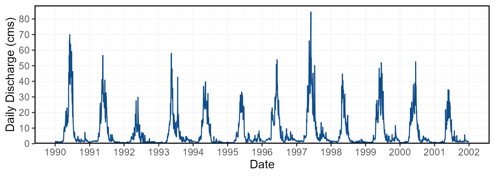
Daily Flows
STATION_NUMBER Date Parameter Value Symbol CalendarYear Month MonthName
1 08NM116 1990-01-01 Flow 1.47 <NA> 1990 1 Jan
2 08NM116 1990-01-02 Flow 1.35 <NA> 1990 1 Jan
3 08NM116 1990-01-03 Flow 1.07 <NA> 1990 1 Jan
4 08NM116 1990-01-04 Flow 1.41 <NA> 1990 1 Jan
5 08NM116 1990-01-05 Flow 1.53 <NA> 1990 1 Jan
6 08NM116 1990-01-06 Flow 1.47 <NA> 1990 1 Jan
WaterYear DayofYear Q3Day Q7Day Q30Day Basin_Area_sqkm
1 1990 1 1.440000 1.447143 1.617733 795
2 1990 2 1.413333 1.428571 1.587400 795
3 1990 3 1.296667 1.371429 1.552067 795
4 1990 4 1.276667 1.367143 1.528733 795
5 1990 5 1.336667 1.382857 1.513067 795
6 1990 6 1.470000 1.388571 1.504400 795Flow_Screening
STATION_NUMBER Year n_days n_Q n_missing_Q Minimum Maximum Mean Median
1 08NM116 1990 365 365 0 0.560 69.9 9.209290 1.98
2 08NM116 1991 365 365 0 0.439 56.7 7.472605 1.74
3 08NM116 1992 366 366 0 0.436 29.8 3.256295 1.19
4 08NM116 1993 365 365 0 0.270 58.0 6.927921 2.57
5 08NM116 1994 365 365 0 0.430 39.7 6.030022 1.26
6 08NM116 1995 365 365 0 0.556 33.1 5.647830 2.26
StandardDeviation Jan_missing_Q Feb_missing_Q Mar_missing_Q Apr_missing_Q
1 14.984546 0 0 0 0
2 11.318678 0 0 0 0
3 4.607470 0 0 0 0
4 10.128417 0 0 0 0
5 8.978709 0 0 0 0
6 7.570999 0 0 0 0
May_missing_Q Jun_missing_Q Jul_missing_Q Aug_missing_Q Sep_missing_Q
1 0 0 0 0 0
2 0 0 0 0 0
3 0 0 0 0 0
4 0 0 0 0 0
5 0 0 0 0 0
6 0 0 0 0 0
Oct_missing_Q Nov_missing_Q Dec_missing_Q
1 0 0 0
2 0 0 0
3 0 0 0
4 0 0 0
5 0 0 0
6 0 0 0Data_screening
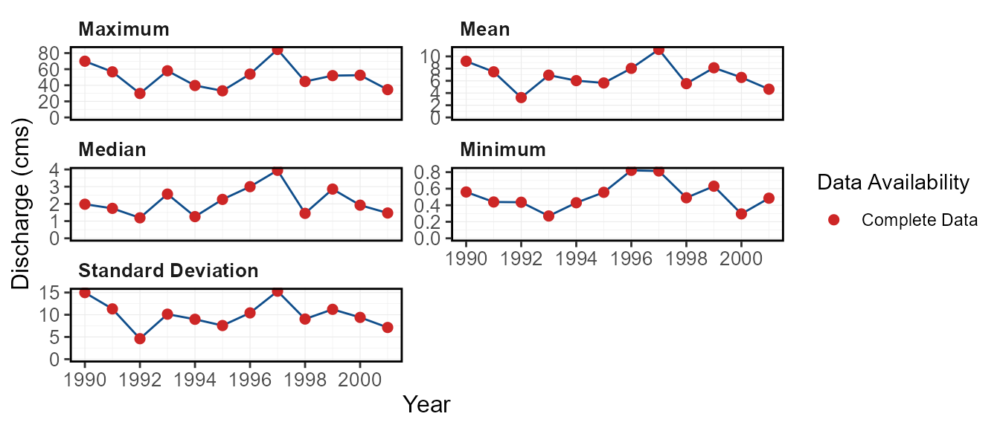
Missing_Dates
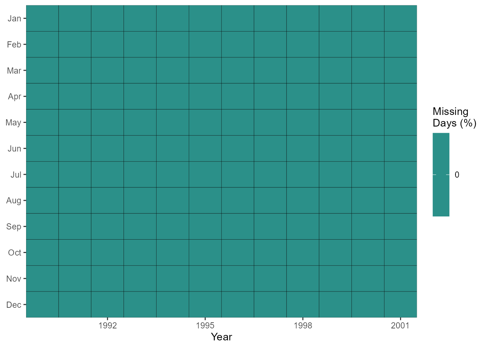
2. Long-term
Long-term_Monthly_Statistics_and_Percentiles
STATION_NUMBER Statistic Jan Feb Mar Apr May
1 08NM116 Mean 1.0534005 1.1084117 1.9882231 10.731858 25.89132
2 08NM116 Median 1.0744194 0.9209366 1.7916613 11.245667 24.50806
3 08NM116 Maximum 1.6035484 2.1444827 3.5261290 20.200000 40.98710
4 08NM116 Minimum 0.6063226 0.6213929 0.9576129 4.085967 14.55032
5 08NM116 P5 0.6539065 0.6351821 1.0254758 5.288102 17.05460
6 08NM116 P10 0.6972903 0.6518679 1.1000710 6.305467 19.41094
Jun Jul Aug Sep Oct Nov Dec
1 23.382545 7.702008 2.482245 2.2215944 2.1161156 2.2487500 1.4836962
2 22.601333 6.890484 2.391210 1.7960167 2.0062903 2.1184500 1.4615323
3 48.640000 17.443871 5.066452 4.5450000 5.2532258 4.6753333 2.7570968
4 4.954200 2.410290 1.138516 0.8591667 0.9684193 0.6556000 0.6930323
5 8.173973 2.682966 1.187927 1.0939983 0.9847774 0.7024600 0.6946113
6 10.972533 2.917523 1.244784 1.2898933 1.0045774 0.7704233 0.6959419
Annual
1 6.881206
2 6.740340
3 11.134121
4 3.256295
5 4.010968
6 4.719439Long-term_Monthly_Statistics
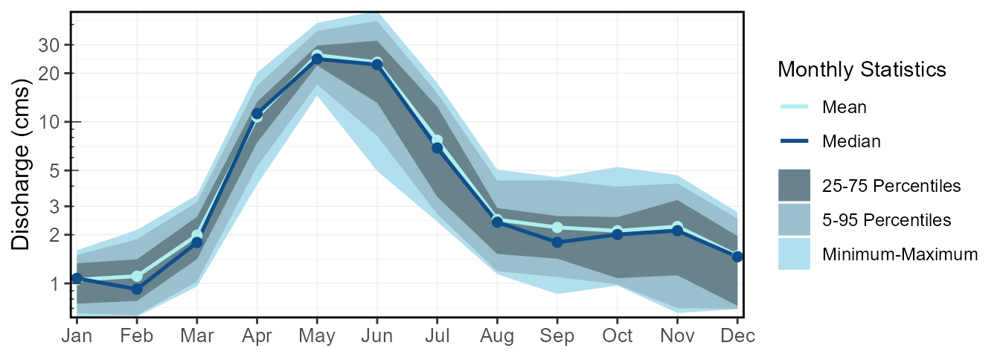
Long-term_Daily_Statistics_and_Percentiles
STATION_NUMBER Statistic Jan Feb Mar Apr May
1 08NM116 Mean 1.053401 1.110018 1.988223 10.73186 25.89132
2 08NM116 Median 1.005000 0.977000 1.560000 8.38500 24.30000
3 08NM116 Maximum 1.900000 2.820000 9.860000 37.90000 74.40000
4 08NM116 Minimum 0.445000 0.270000 0.400000 0.80200 7.41000
5 08NM116 P1 0.493780 0.301900 0.471300 0.90395 8.31010
6 08NM116 P2 0.542520 0.318080 0.650000 0.99508 9.18520
Jun Jul Aug Sep Oct Nov Dec Long-term
1 23.38254 7.702008 2.482245 2.221594 2.116116 2.24875 1.483696 6.880568
2 20.10000 5.005000 1.935000 1.725000 1.600000 1.79000 1.300000 2.130000
3 84.50000 50.200001 12.200000 13.600000 10.600000 11.70000 7.300000 84.500000
4 0.45000 0.537000 0.522000 0.490000 0.455000 0.27400 0.440000 0.270000
5 0.77101 0.665550 0.648970 0.578210 0.513780 0.41770 0.460000 0.479100
6 1.85380 0.733000 0.663680 0.628000 0.634000 0.44934 0.472100 0.560000Long-term_Daily_Statistics
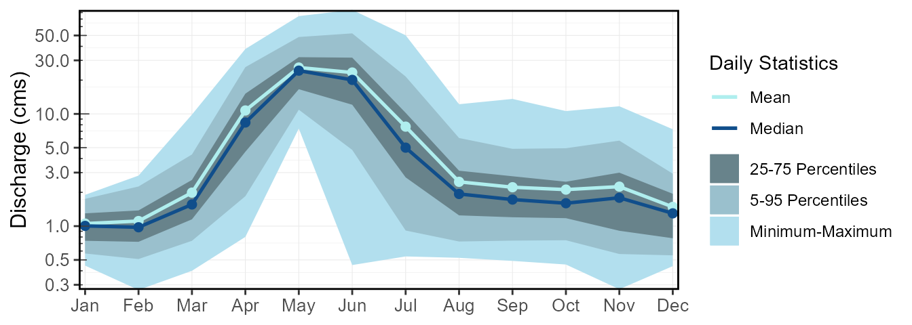
Flow_Duration
3. Annual
Annual_Cumulative_Volume
STATION_NUMBER Year Total_Volume_m3 Jan-Jun_Volume_m3 Jul-Dec_Volume_m3
1 08NM116 1990 290424183 230483751 59940432
2 08NM116 1991 235656087 196640352 39015734
3 08NM116 1992 102971866 78907565 24064301
4 08NM116 1993 218478903 146492323 71986580
5 08NM116 1994 190162772 169489066 20673706
6 08NM116 1995 178109971 134680061 43429910
Jan-Mar_Volume_m3 Apr-Jun_Volume_m3 Jul-Sep_Volume_m3 Oct-Dec_Volume_m3
1 9787910 220695841 44364672 15575760
2 11722752 184917600 32558198 6457536
3 10838534 68069031 16926278 7138022
4 6043075 140449248 55045440 16941139
5 15275434 154213632 14264122 6409584
6 8210333 126469728 19188662 24241248Annual_Cumulative_Yield
STATION_NUMBER Year Total_Yield_mm Jan-Jun_Yield_mm Jul-Dec_Yield_mm
1 08NM116 1990 365.3134 289.9167 75.39677
2 08NM116 1991 296.4228 247.3464 49.07640
3 08NM116 1992 129.5244 99.2548 30.26956
4 08NM116 1993 274.8162 184.2671 90.54916
5 08NM116 1994 239.1985 213.1938 26.00466
6 08NM116 1995 224.0377 169.4089 54.62882
Jan-Mar_Yield_mm Apr-Jun_Yield_mm Jul-Sep_Yield_mm Oct-Dec_Yield_mm
1 12.311837 277.60483 55.80462 19.592151
2 14.745600 232.60076 40.95371 8.122687
3 13.633377 85.62142 21.29092 8.978645
4 7.601352 176.66572 69.23955 21.309609
5 19.214382 193.97941 17.94229 8.062370
6 10.327463 159.08142 24.13668 30.492136Annual_Days_Outside_Normal
STATION_NUMBER Year Days_Below_Normal Days_Above_Normal Days_Outside_Normal
1 08NM116 1990 27 93 120
2 08NM116 1991 88 89 177
3 08NM116 1992 213 18 231
4 08NM116 1993 89 84 173
5 08NM116 1994 163 79 242
6 08NM116 1995 94 71 165Annual_Days_Outside_Normal

Annual_Flow_Timing
STATION_NUMBER Year DoY_25pct_TotalQ Date_25pct_TotalQ DoY_33.3pct_TotalQ
1 08NM116 1990 144 1990-05-24 150
2 08NM116 1991 130 1991-05-10 136
3 08NM116 1992 121 1992-04-30 127
4 08NM116 1993 134 1993-05-14 138
5 08NM116 1994 112 1994-04-22 118
6 08NM116 1995 133 1995-05-13 139
Date_33.3pct_TotalQ DoY_50pct_TotalQ Date_50pct_TotalQ DoY_75pct_TotalQ
1 1990-05-30 160 1990-06-09 177
2 1991-05-16 147 1991-05-27 173
3 1992-05-06 142 1992-05-21 171
4 1993-05-18 149 1993-05-29 201
5 1994-04-28 132 1994-05-12 157
6 1995-05-19 153 1995-06-02 179
Date_75pct_TotalQ
1 1990-06-26
2 1991-06-22
3 1992-06-19
4 1993-07-20
5 1994-06-06
6 1995-06-28Annual_Flow_Timing
Annual_Low_Flows
STATION_NUMBER Year Min_1_Day Min_1_Day_DoY Min_1_Day_Date Min_3_Day
1 08NM116 1990 0.560 12 1990-01-12 0.7000000
2 08NM116 1991 0.439 326 1991-11-22 0.4426667
3 08NM116 1992 0.436 51 1992-02-20 0.4733333
4 08NM116 1993 0.270 50 1993-02-19 0.2940000
5 08NM116 1994 0.430 326 1994-11-22 0.4500000
6 08NM116 1995 0.556 201 1995-07-20 0.6353333
Min_3_Day_DoY Min_3_Day_Date Min_7_Day Min_7_Day_DoY Min_7_Day_Date
1 13 1990-01-13 0.9578571 51 1990-02-20
2 326 1991-11-22 0.5078571 329 1991-11-25
3 278 1992-10-04 0.5178571 21 1992-01-21
4 51 1993-02-20 0.2981429 55 1993-02-24
5 327 1994-11-23 0.4650000 349 1994-12-15
6 202 1995-07-21 0.6657143 57 1995-02-26
Min_30_Day Min_30_Day_DoY Min_30_Day_Date
1 1.0637000 72 1990-03-13
2 0.6204000 352 1991-12-18
3 0.5775667 28 1992-01-28
4 0.4850333 72 1993-03-13
5 0.5430667 351 1994-12-17
6 0.7014667 61 1995-03-02Annual_Low_Flows
Annual_Low_Flows_Dates
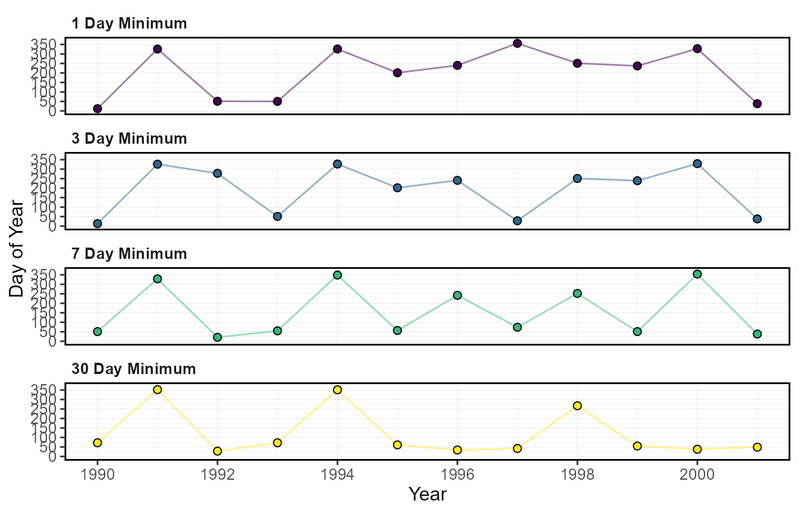
Annual_Means
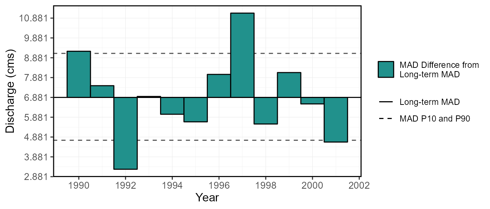
Annual_Statistics
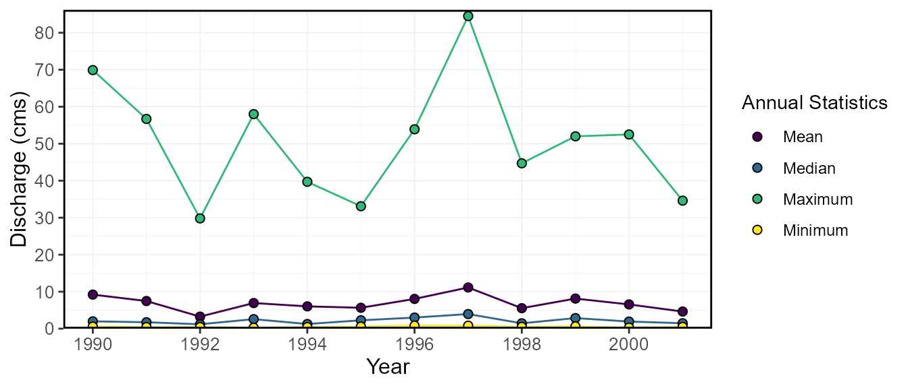
Annual_Summary_Statistics
STATION_NUMBER Year Mean Median Maximum Minimum P10 P90
1 08NM116 1990 9.209290 1.98 69.9 0.560 1.0900 34.100
2 08NM116 1991 7.472605 1.74 56.7 0.439 0.7146 27.080
3 08NM116 1992 3.256295 1.19 29.8 0.436 0.6320 8.295
4 08NM116 1993 6.927921 2.57 58.0 0.270 0.6500 18.340
5 08NM116 1994 6.030022 1.26 39.7 0.430 0.6840 22.700
6 08NM116 1995 5.647830 2.26 33.1 0.556 0.7302 20.000Annual_Total_Volume
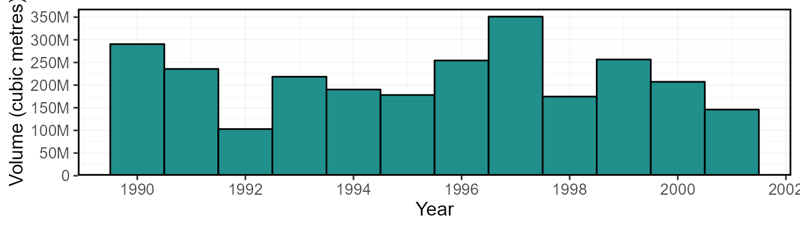
Annual_Yield
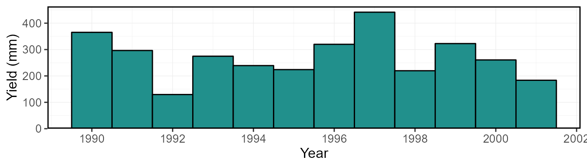
Four_Seasons_Total_Volume
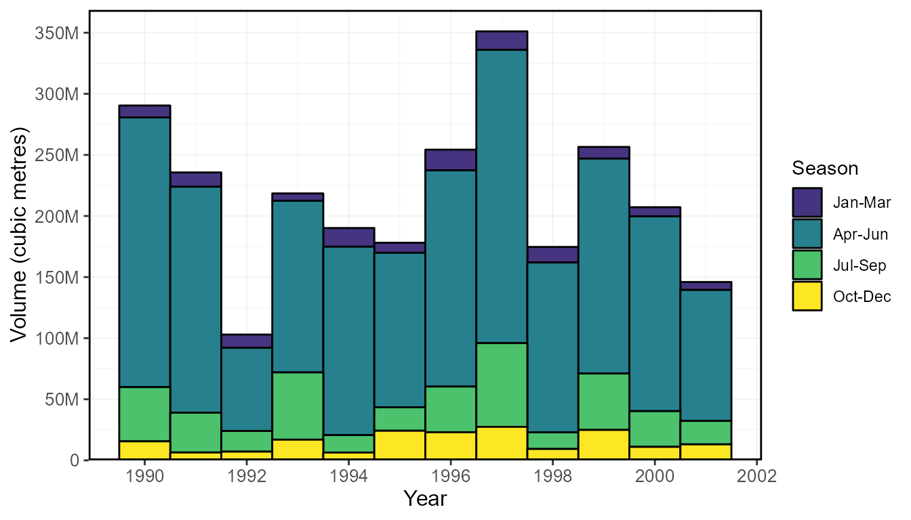
Four_Seasons_Yield
Two_Seasons_Total_Volume
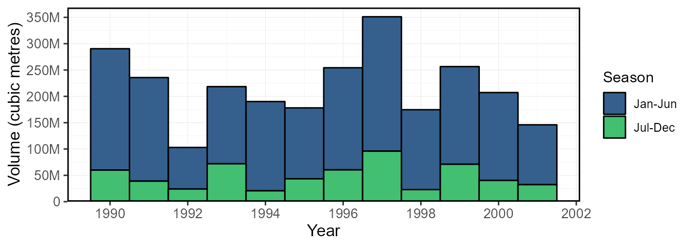
Two_Seasons_Yield
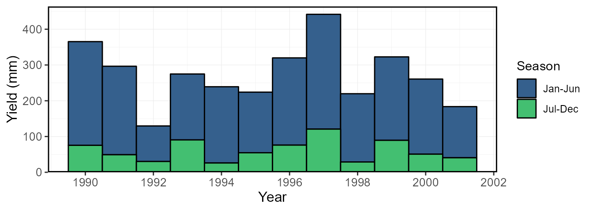
4. Monthly
Monthly_Summary_Statistics
STATION_NUMBER Year Month Mean Median Maximum Minimum P10 P90
1 08NM116 1990 Jan 1.220645 1.260 1.53 0.560 0.8950 1.47
2 08NM116 1990 Feb 1.075357 1.085 1.31 0.840 0.9635 1.23
3 08NM116 1990 Mar 1.462452 1.220 3.29 0.917 1.0100 1.94
4 08NM116 1990 Apr 11.435000 10.500 20.80 4.900 7.8090 17.53
5 08NM116 1990 May 24.261290 17.400 56.50 10.900 12.1000 45.80
6 08NM116 1990 Jun 48.640000 47.700 69.90 27.000 33.7400 60.75Maximum_Monthly_Statistics
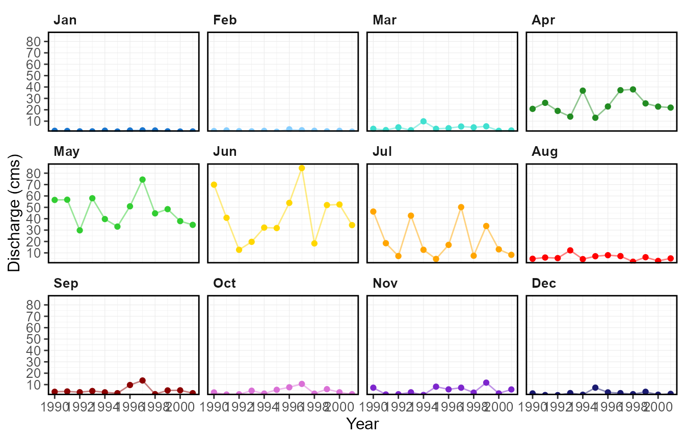
Mean_Monthly_Statistics

Median_Monthly_Statistics
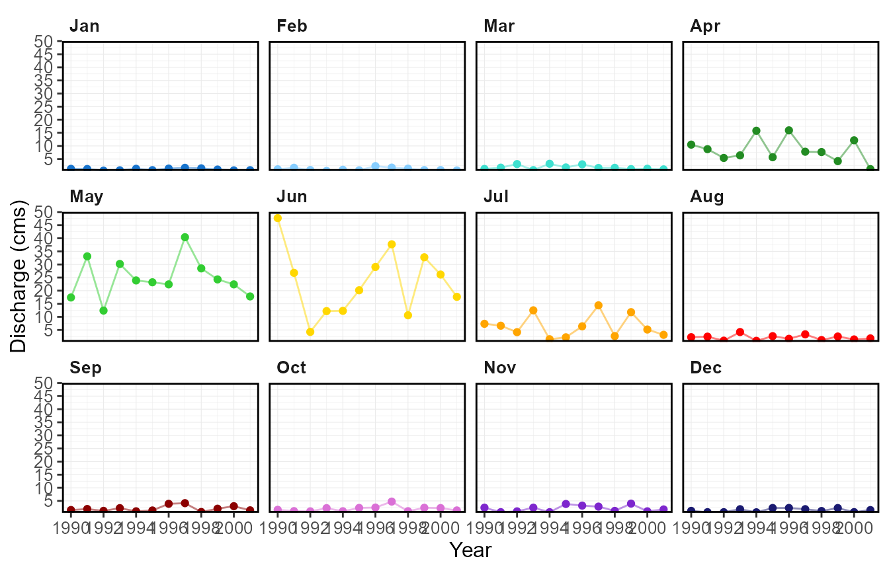
Minimum_Monthly_Statistics
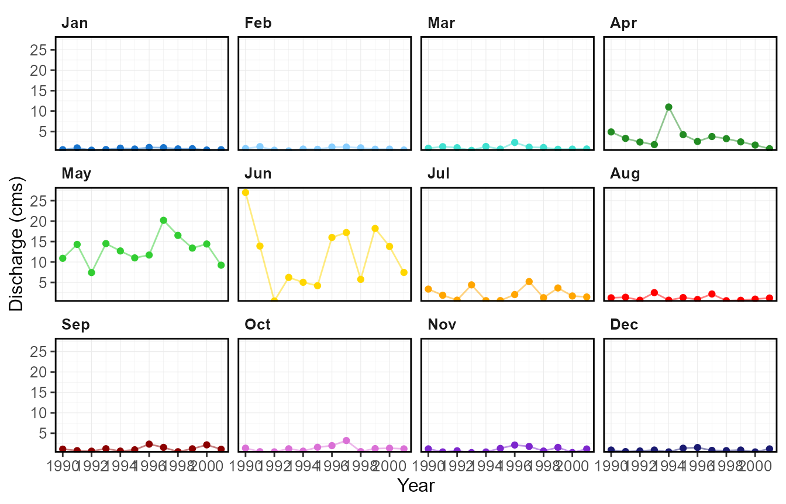
Monthly_Cumulative_Volumetric_Stats
STATION_NUMBER Month Mean Median Maximum Minimum P5
1 08NM116 Jan 2821428 2877725 4294944 1623974 1751423
2 08NM116 Feb 5530759 5172163 9166176 3478205 3535656
3 08NM116 Mar 10856016 10313222 16967232 6043075 6282291
4 08NM116 Apr 38672993 38081966 67633833 17068838 21619401
5 08NM116 May 108020297 108479779 159751008 66066279 67259506
6 08NM116 Jun 168627852 168206544 255162529 78907565 98027427
P25 P75 P95
1 2007785 3566830 4018853
2 3765031 6934097 8693352
3 8034811 13325753 16036743
4 26824846 47787473 59668103
5 94938264 124972049 146104642
6 143539258 194588784 241589201Monthly_Cumulative_Volume
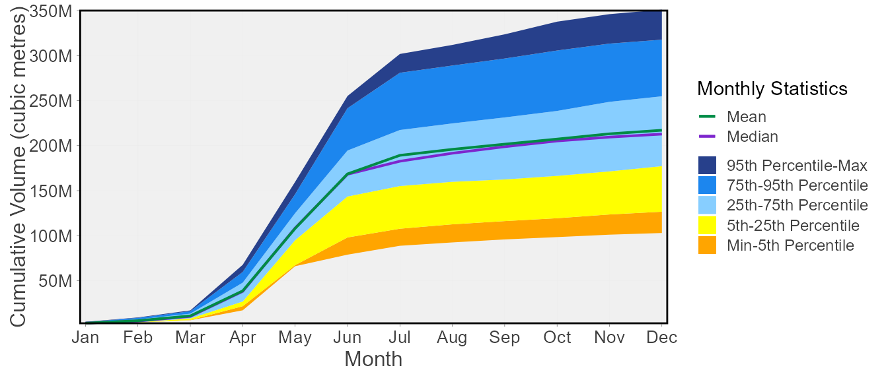
Monthly_Cumulative_Yield_Stats
STATION_NUMBER Month Mean Median Maximum Minimum P5
1 08NM116 Jan 3.548966 3.619780 5.402445 2.042735 2.203048
2 08NM116 Feb 6.956930 6.505866 11.529781 4.375100 4.447367
3 08NM116 Mar 13.655366 12.972607 21.342430 7.601352 7.902253
4 08NM116 Apr 48.645274 47.901844 85.074004 21.470237 27.194215
5 08NM116 May 135.874587 136.452552 200.944665 83.102237 84.603152
6 08NM116 Jun 212.110506 211.580559 320.959156 99.254799 123.304940
P25 P75 P95
1 2.525515 4.486578 5.055161
2 4.735888 8.722134 10.935034
3 10.106681 16.761953 20.172004
4 33.741944 60.110029 75.054218
5 119.419200 157.197546 183.779425
6 180.552525 244.765766 303.885788Monthly_Cumulative_Yield
5. Daily
Daily_Summary_Statistics
STATION_NUMBER Date DayofYear Mean Median Minimum Maximum P5
1 08NM116 Jan-01 1 1.199917 1.080 0.611 1.85 0.65885
2 08NM116 Jan-02 2 1.158417 1.025 0.610 1.90 0.66005
3 08NM116 Jan-03 3 1.092083 0.983 0.605 1.85 0.65945
4 08NM116 Jan-04 4 1.085500 0.990 0.499 1.65 0.61340
5 08NM116 Jan-05 5 1.085500 1.030 0.596 1.65 0.65870
6 08NM116 Jan-06 6 1.101750 1.030 0.591 1.59 0.65095
P25 P75 P95
1 0.8900 1.5275 1.8060
2 0.8725 1.4025 1.8340
3 0.8375 1.2025 1.8115
4 0.8450 1.4525 1.6170
5 0.8450 1.3800 1.5840
6 0.8275 1.4175 1.5680Daily_Statistics
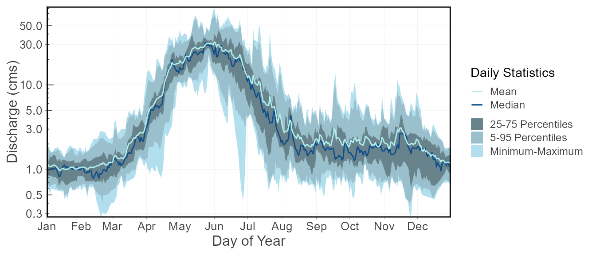
Daily_Statistics_with_Years (a folder with a plot for each year)
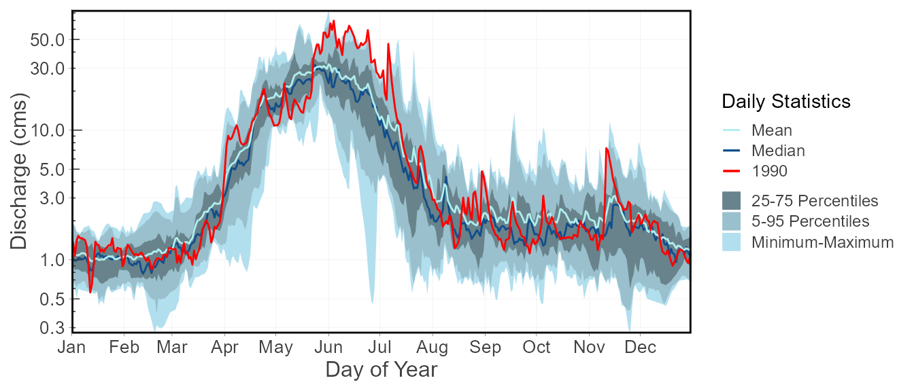
Daily_Cumulative_Volume
STATION_NUMBER Date DayofYear Mean Median Minimum Maximum P5
1 08NM116 Jan-01 1 103672.8 93312 52790.4 159840 56924.64
2 08NM116 Jan-02 2 203760.0 181872 105494.4 324000 113952.96
3 08NM116 Jan-03 3 298116.0 272160 157766.4 483840 170929.44
4 08NM116 Jan-04 4 391903.2 364608 200880.0 626400 223927.20
5 08NM116 Jan-05 5 485690.4 454464 252374.4 756000 280838.88
6 08NM116 Jan-06 6 580881.6 543456 303436.8 889920 337080.96
P25 P75 P95
1 76896 131976.0 156038.4
2 152280 258768.0 314496.0
3 225288 358948.8 471009.6
4 298296 475200.0 610243.2
5 371304 609984.0 732240.0
6 442800 739584.0 858081.6Daily_Cumulative_Volumetric_Stats
Daily_Cumulative_Volume_with_Years (a folder with a plot for each year)
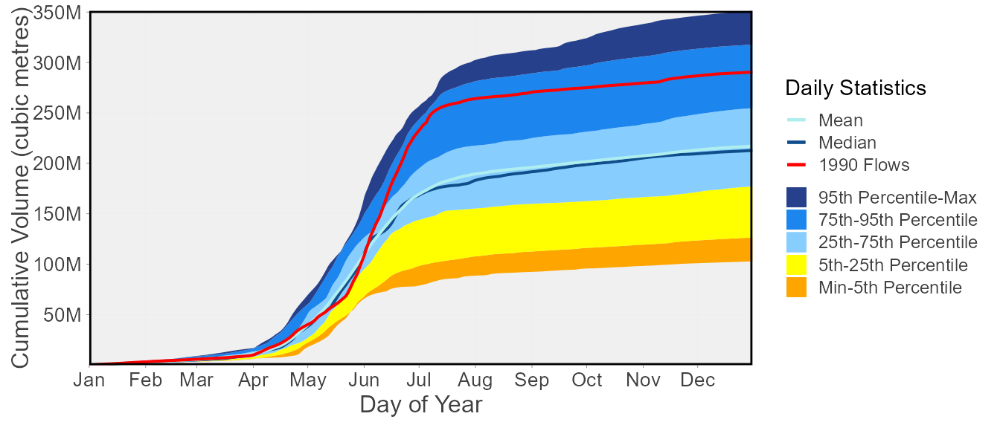
Daily_Cumulative_Yield
STATION_NUMBER Date DayofYear Mean Median Minimum Maximum
1 08NM116 Jan-01 1 0.1304060 0.1173736 0.06640302 0.2010566
2 08NM116 Jan-02 2 0.2563019 0.2287698 0.13269736 0.4075472
3 08NM116 Jan-03 3 0.3749887 0.3423396 0.19844831 0.6086038
4 08NM116 Jan-04 4 0.4929600 0.4586264 0.25267925 0.7879245
5 08NM116 Jan-05 5 0.6109313 0.5716528 0.31745208 0.9509434
6 08NM116 Jan-06 6 0.7306687 0.6835925 0.38168152 1.1193962
P5 P25 P75 P95
1 0.07160332 0.09672453 0.1660076 0.1962747
2 0.14333706 0.19154717 0.3254943 0.3955924
3 0.21500559 0.28338113 0.4515079 0.5924649
4 0.28166944 0.37521509 0.5977359 0.7676015
5 0.35325645 0.46704906 0.7672755 0.9210566
6 0.42400121 0.55698113 0.9302943 1.0793479Daily_Cumulative_Yield_Stats
Daily_Cumulative_Yield_with_Years (a folder with a plot for each year)
6. Trending
Annual_Trends_Data
STATION_NUMBER Statistic 1990 1991 1992 1993
1 08NM116 Annual_Maximum 69.90000 56.700001 29.799999 58.000000
2 08NM116 Annual_Mean 9.20929 7.472605 3.256295 6.927921
3 08NM116 Annual_Median 1.98000 1.740000 1.190000 2.570000
4 08NM116 Annual_Minimum 0.56000 0.439000 0.436000 0.270000
5 08NM116 Annual_P10 1.09000 0.714600 0.632000 0.650000
6 08NM116 Annual_P90 34.10000 27.080000 8.295000 18.340000
1994 1995 1996 1997 1998 1999 2000 2001
1 39.700001 33.10000 53.900002 84.50000 44.700001 52.000000 52.50000 34.599998
2 6.030022 5.64783 8.041762 11.13412 5.538548 8.134885 6.55276 4.628427
3 1.260000 2.26000 3.000000 3.95000 1.450000 2.860000 1.92500 1.470000
4 0.430000 0.55600 0.822000 0.81400 0.490000 0.630000 0.29500 0.485000
5 0.684000 0.73020 1.465000 1.50000 0.775400 0.846200 0.70000 0.704000
6 22.700001 20.00000 22.550000 36.62000 18.020000 25.180000 21.75000 15.980000Annual_Trends_Results
STATION_NUMBER Statistic lbound trend trendp ubound
1 08NM116 Annual_Maximum -3.8600006 -0.680952799 -8.17143359 2.4599998
2 08NM116 Annual_Mean -0.4588428 -0.146384478 -1.75661374 0.3712806
3 08NM116 Annual_Median -0.1550000 0.033055537 0.39666645 0.1966666
4 08NM116 Annual_Minimum -0.0265000 0.004085713 0.04902855 0.0400000
5 08NM116 Annual_P10 -0.0377000 0.006946430 0.08335716 0.0324400
6 08NM116 Annual_P90 -1.7700001 -0.443611119 -5.32333342 1.1399999
tau sig nruns autocor valid_frac linear intercept
1 -0.05454546 0.8762696 1 -0.05611209 1 -0.636363743 58.3642887
2 -0.01818182 1.0000000 1 0.02302120 1 -0.048107038 7.6394165
3 0.12727274 0.6404288 1 -0.12198971 1 0.038304195 1.8104167
4 0.12727274 0.6404288 1 0.32972477 1 0.006136364 0.4446000
5 0.27272728 0.2757578 1 0.35270978 1 0.003258040 0.6946143
6 -0.05454546 0.8762696 1 0.01450033 1 -0.302045420 25.2866672
min_year max_year n_years mean median min max
1 1990 2001 12 50.7833335 52.25000 29.799999 84.50000
2 1990 2001 12 6.8812055 6.74034 3.256295 11.13412
3 1990 2001 12 2.1379167 1.95250 1.190000 3.95000
4 1990 2001 12 0.5189167 0.48750 0.270000 0.82200
5 1990 2001 12 0.8742833 0.72240 0.632000 1.50000
6 1990 2001 12 22.5512501 22.15000 8.295000 36.62000Annual_Trends_Results_Plots (a folder with a plot for each statistic)
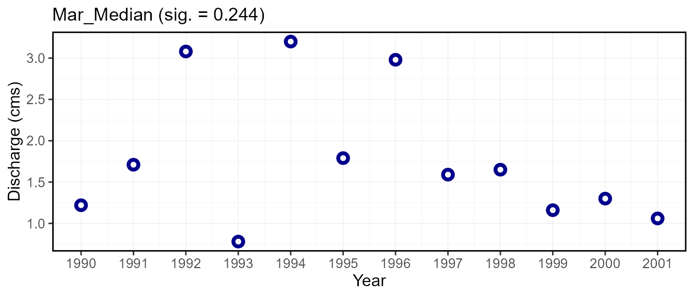
7. Low-flow Frequencies
Annual_Lowflows
Year Measure Value
1 1990 1-Day 0.5600000
2 1990 3-Day 0.7000000
3 1990 7-Day 0.9578571
4 1990 30-Day 1.0637000
5 1991 1-Day 0.4390000
6 1991 3-Day 0.4426667Plotting_Data
Year Measure Value Probability Return Period
1 1993 1-Day 0.270 0.07692308 13.000000
2 2000 1-Day 0.295 0.15384615 6.500000
3 1994 1-Day 0.430 0.23076923 4.333333
4 1992 1-Day 0.436 0.30769231 3.250000
5 1991 1-Day 0.439 0.38461538 2.600000
6 2001 1-Day 0.485 0.46153846 2.166667Frequency_Plot
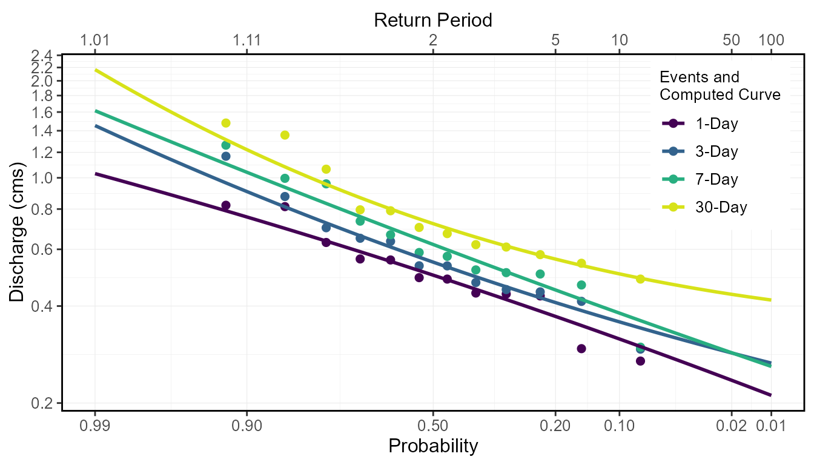
Fitted_Quantiles
Distribution Probability Return Period 1-Day 3-Day 7-Day
1 PIII 0.01 100.00 0.2112608 0.2660753 0.2597879
2 PIII 0.05 20.00 0.2756306 0.3207233 0.3324727
3 PIII 0.10 10.00 0.3160667 0.3571885 0.3802991
4 PIII 0.20 5.00 0.3713761 0.4101155 0.4487284
5 PIII 0.50 2.00 0.4987802 0.5474475 0.6209821
6 PIII 0.80 1.25 0.6582867 0.7555537 0.8689357
30-Day
1 0.4175355
2 0.4671200
3 0.5033345
4 0.5594392
5 0.7205906
6 0.9988929